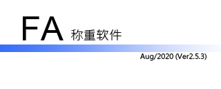

软件起源
在电线行业中，铜线为贵金属，是以重量为计量单位。铜线拉丝后每轴需称重，且贴小标签标记信息，统计总重，开制送货单等。 主要功能：称重，打印小标签，统计库存，印制磅码单。
核心观念：实用软件，不花哨！
当前版本： Aug/2020 (ver: 2.5.3) 请检查您所使用软件版本！
目前最在售软件分两套：
- 怀念版2.0，仅支持梅特勒。托利多仪表。(因历史问题，无法更新），详细请参见更新记录。
- 新版，软件名称： FA，请浏览以下文档。
> 本帮助文档由以下组成！
> 常见问题列表
> 硬件及配件
> 联系方式
@2020年8月